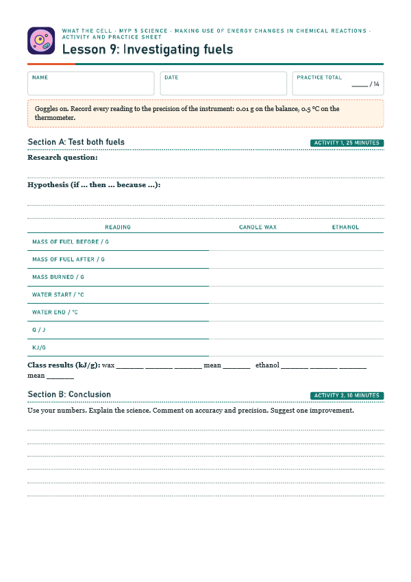

By the end of the lesson you can
- Write a focused research question and a hypothesis
- Identify the variables and plan a safe method
- Collect and record results with repeats
- Process the data and draw a conclusion
Keys: arrows or a presentation clicker move the slides, F for full screen. Slides with a red dot have a video or simulation.
Videos (all 5 minutes or less)
- 2:00
Combustion of alcohols experiment
AMALearning. The calorimetry method step by step: use it to check your plan. Slide 9.
Simulations
- Lab
Energy Changes Lab: fuel calorimetry
What the Cell. Compare candle wax and ethanol with the same settings as your experiment, then switch on every improvement.
Print and practise

Activity and practice sheet
Used in the lesson’s activities, with practice questions. Your teacher has the answers.
Download (PDF)Lesson 9 slides
All 22 slides in one file, to read again or print. The video buttons on the slides open YouTube.
Download the slides (PDF)Revising? The Revision tab on the unit page has the unit notes and review.
Class activity pack
Everything to print for the lesson’s activities: picture cards, sorting mats, station cards with their kit lists, and the teacher’s set-up notes. Print it before class.
Download the activity pack (PDF)Notes: Investigating fuels
Research question
Name the independent variable, the dependent variable and how it is measured: How does the type of fuel (candle wax or ethanol) affect the energy released per gram, measured by heating 100 g of water by 20 °C?
Variables
Independent: type of fuel. Dependent: energy released per gram. Controlled: mass of water, temperature rise, distance from flame to can, the can, the draught shield and stirring.
Hypothesis
If the fuel is candle wax, then it will release more energy per gram than ethanol, because wax contains only carbon and hydrogen to burn, while ethanol already contains oxygen and is partly oxidised.
Safety
Ethanol is highly flammable: the teacher fills burners, caps stay on when not lit, and no refilling while a flame is lit. Tie hair back, let hot cans cool, wear goggles.
Processing
Q = 100 × 4.2 × 20 = 8400 J for each trial. Energy per gram = Q / mass burned. Find the mean of the trials and show the range. Use a bar chart because the fuel is a category.
Evaluating
Example means: wax 20.0 kJ/g, ethanol 14.1 kJ/g, both about 48% of the data-book values (42 and 29.7). The values are low because of heat loss, but both fuels lost a similar proportion, so the comparison is still valid.
Key words
| research question | a question that names what you change, what you measure and how |
|---|---|
| hypothesis | a testable prediction with a scientific reason |
| controlled variable | something kept the same so the test is fair |
| mean | the total of the trials divided by the number of trials |
| range | the lowest to the highest value of the trials |
| systematic error | an error that shifts every result the same way, such as heat loss |